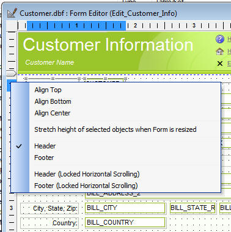
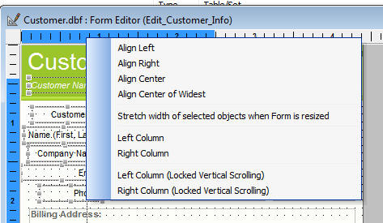

Form Headers and Footers
You can now define headers and footers for your Forms. Any content in a header or footer section will always stay on screen even if the form is too large to fit in the current window. The vertical scroll bar will scroll the area between the header and footer. You can also define a ' vertical header' section on the left of the Form and a ' vertical footer' section on the right of the Form. The horizontal scroll bar will scroll the contents between the vertical locked sections. You might use the header section to place 'masthead' or company logo. You might use the left hand 'vertical header' for record navigation controls, or any other content that you want to ensure is always visible, regardless of how large the form is.
To place a header or footer on a Form Layout, right click in the vertical or horizontal ruler at the place where you want the header or footer to be defined.
If you click in a vertical ruler, the right click menu will show options for a horizontal header and footer. If you right click in the horizontal ruler, the right click menu will show options for vertical 'headers' and 'footers'.
(Hover over an image to see it full size.)
|  |  |
The headers and footers are indicated in the ruler by the special symbol:
In addition, a dotted line in the Form Layout shows the location of the header or footer.
There are two types of headers and footers as you can see on the right-click menu. In the case of vertical 'headers' and 'footers' these are referred to as 'Left Column' and 'Right Column' to make clear that the 'header' is conceptually a 'column' on the left of the Form and the 'footer' is a conceptually a 'column' on the right of the Form.
In the case of horizontal headers and footers, the content in the header and footer sections is locked on screen when you scroll the form using the vertical scroll bar, but the content inside the headers and footers is not locked on screen when you scroll the form using the horizontal scroll bars. If you define your headers and footers using the second option shown in the right click menu - 'Header (Locked Horizontal Scrolling) - then the content in the header section remains locked on screen when you scroll the form horizontally.
Similarly, with vertical 'headers' and 'footers'. When you scroll the Form horizontally, the content in the header and footer sections remains locked on screen, but when you scroll the Form vertically, the content in the header sections will scroll - unless you use the 'Locked Vertical Scrolling' options when you define the header and footers.